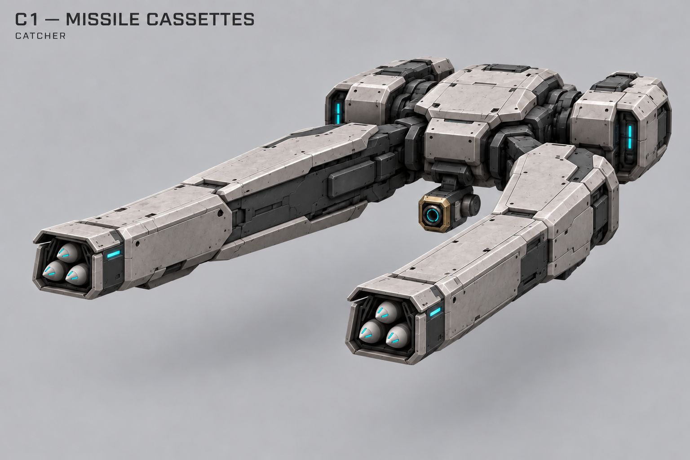
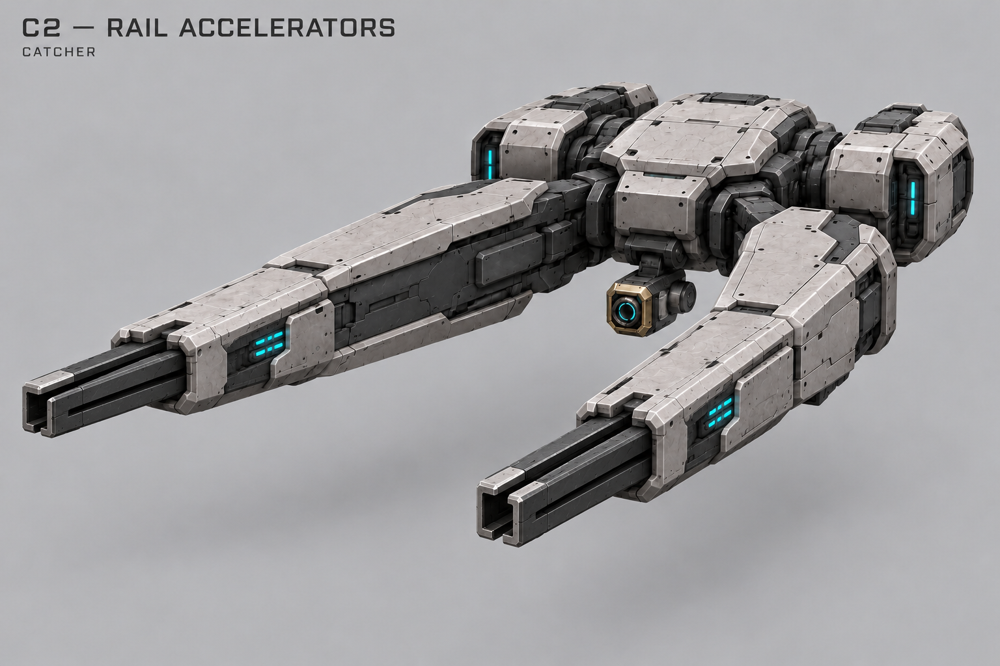
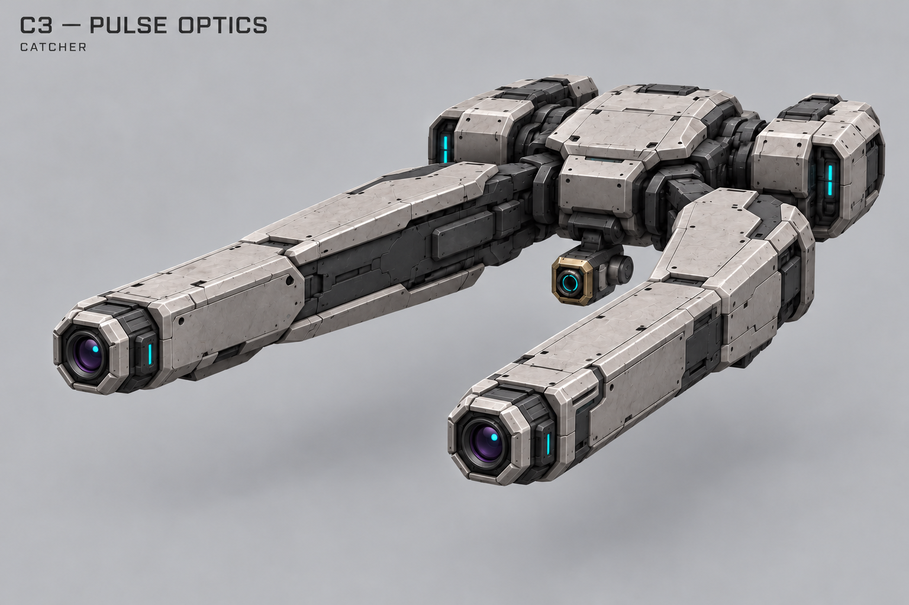
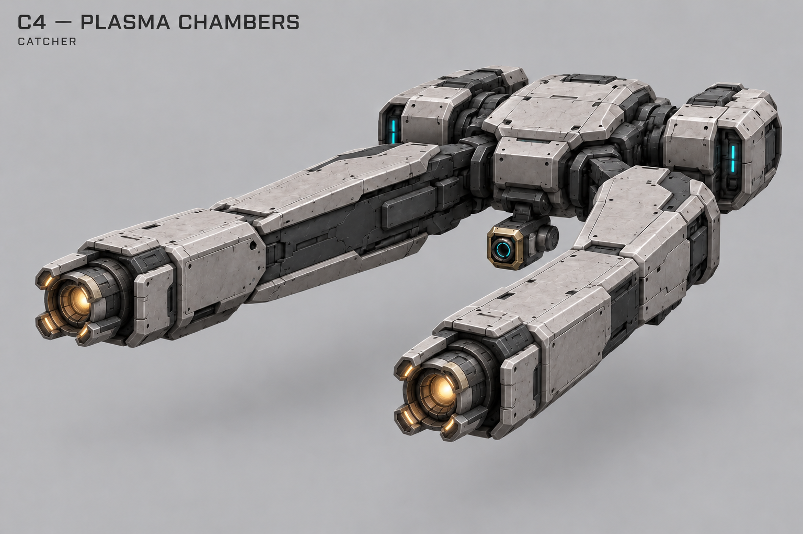
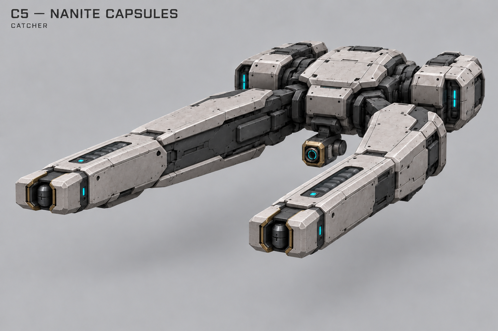
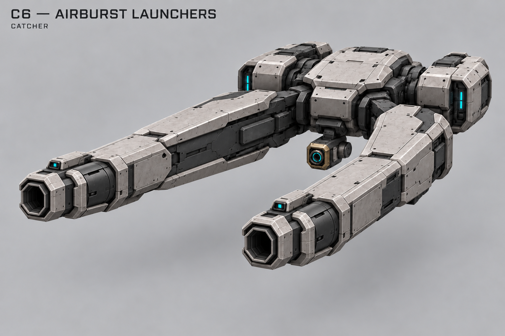

C1 — Ракетные кассеты
Короткий залп управляемых ракет. Кандидат на штатное оружие перехвата; время полёта, наведение, правила потери цели и размер залпа ещё не утверждены.

Корпус C выбран основой. Шесть альтернатив одного оружия; нижний узел зацепа сохраняется. Механические особенности ниже — предложения.
Короткий залп управляемых ракет. Кандидат на штатное оружие перехвата; время полёта, наведение, правила потери цели и размер залпа ещё не утверждены.

Редкие быстрые кинетические выстрелы. Поддерживает роль против тяжёлой авиации; никакого пробивания нескольких целей без отдельного решения.

Короткие точные световые импульсы. Не постоянный луч и не разгон Излучателя. Мгновенное попадание против визуальной трассы ещё выбрать.

Заметные плазменные сгустки. Зацеп может помогать попаданию; скорость снаряда и самонаведение открыты. Урон по площади автоматически не добавляется.

Плотные нанитные капсулы, распадающиеся при попадании. Без заражения, призыва, ремонта владельца и урона со временем по умолчанию.

Программируемые боеприпасы с воздушным подрывом около цели. Визуальная вспышка сама по себе не означает AoE. Если выбирать урон по площади — заново проверить роль и баланс.
